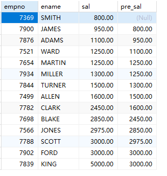
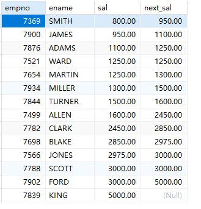
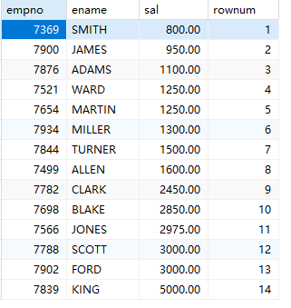
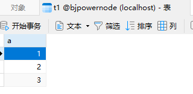
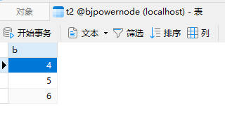
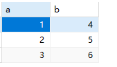
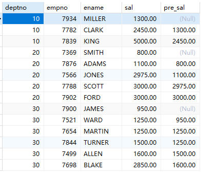

MySQL 8.0及以上版本中支持如下常用的窗口函数：
ROW_NUMBER()：排名函数，返回当前结果集中每个行的行号；RANK()：排名函数，计算分组结果中的排名，相同的行排名相同且没有空缺，下一个行排名跳过空缺；DENSE_RANK()：排名函数，计算分组结果中的排名，相同的行排名相同，排名连续，没有空缺；NTILE()：将分组结果等分为指定的组数，计算每组的大小；LAG()：返回分组内前一行的值；LEAD()：返回分组内后一行的值；FIRST_VALUE()：返回分组内第一个值；LAST_VALUE()：返回分组内最后一个值；AVG()、SUM()、COUNT()、MIN()、MAX()：聚合函数，可以配合OVER()进行窗口操作。lag函数：获取当前行的上一行数据
select empno,ename,sal,(lag(sal) over(order by sal asc)) as pre_sal from emp;

注意：over函数用来指定“在.....范围内”，通常和lag函数联用。lead函数：获取当前行的下一行数据
select empno,ename,sal,(lead(sal) over(order by sal asc)) as next_sal from emp;

注意：over函数用来指定“在.....范围内”，通常和lead函数联用。row_number函数：可以为查询结果集生成行号：
select empno,ename,sal,row_number() over(order by sal) as rownum from emp;

利用row_number函数，将两个不相关的列拼接在一起显示：


select
x.a, y.b
from
(select a,row_number() over(order by a) as rownum from t1) x
join
(select b,row_number() over(order by b) as rownum from t2) y
on
x.rownum = y.rownum;

CTE语法（公用表表达式）：Common Table Expression。创建临时表的一种语法：
-- 查询每个部门平均工资的工资等级
-- 第一种写法
select
t.deptno,t.avgsal,s.grade
from
(select deptno,avg(sal) as avgsal from emp group by deptno) t
join
salgrade s
on
t.avgsal between s.losal and s.hisal;
-- 第二种写法：使用CTE语法
with cte_exp as(select deptno,avg(sal) as avgsal from emp group by deptno)
select
cte_exp.deptno,cte_exp.avgsal,s.grade
from
cte_exp
join
salgrade s
on
cte_exp.avgsal between s.losal and s.hisal;
partition by：将数据分区，和group by区别是：group by是分组，然后和分组函数一起用。partition by分区不需要和分组函数一起使用
select deptno, empno,ename,sal,(lag(sal) over(partition by deptno order by sal asc)) as pre_sal from emp;

需要注意的是，MySQL的窗口函数和其他DBMS中的窗口函数相比较，可能略有不同，需要根据MySQL的文档进行使用。